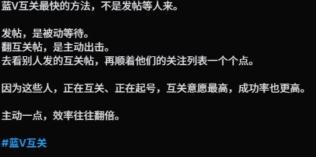

Jahseh
@godspeedyou50
@KinnaCheung_ 你好

思維就是生活
@KinnaCheung_
#蓝V互关 #实测
现在新面孔越来越难找。诚信互
切忌‘谨慎’用下面的办法，因为下面帖子容易曝光获得流量，所以很多人重复发。
实际上群里有几个兄弟去蓝V关注列表里找人互关，咔咔关注，第二天账号冻结。还有很多没回关的。
互关不是急于求成的，慢慢来，1天1-200关注就很厉害了。 https://t.co/uyGJ5hpjAy